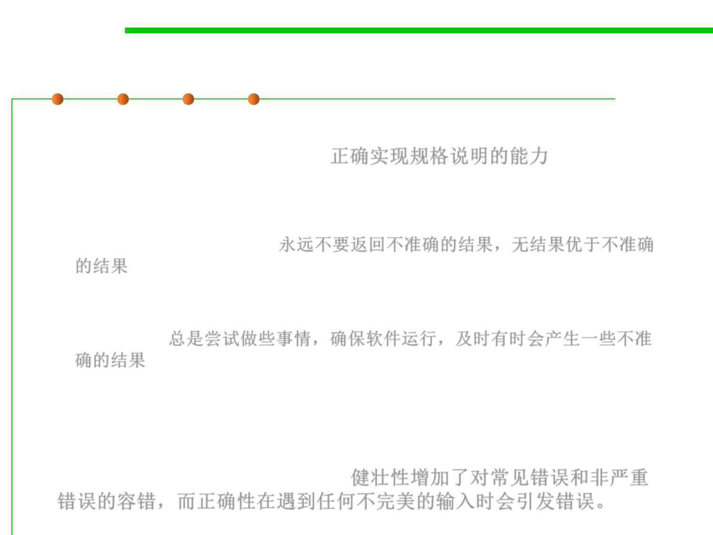

Correctness
7.1 Robustness & Correctness
▪ Correctness is defined as the software’s ability to perform
according to its specification. 正确实现规格说明的能力
▪ Robustness vs. correctness: at opposite ends of the scale.
– Correctness means never returning an inaccurate result; no result is better
than an inaccurate result. 永远不要返回不准确的结果，无结果优于不准确
的结果
– Robustness means always trying to do something that will allow the
software to keep operating, even if that leads to results that are inaccurate
sometimes. 总是尝试做些事情，确保软件运行，及时有时会产生一些不准
确的结果
▪ Robustness adds built-in tolerance for common and non-critical
mistakes, while correctness throws an error when it encounters
anything less than perfect input.健壮性增加了对常见错误和非严重
错误的容错，而正确性在遇到任何不完美的输入时会引发错误。